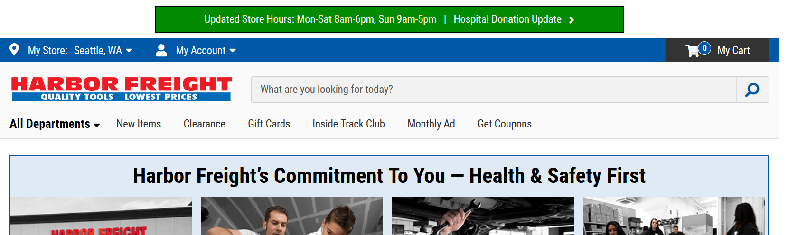

This week, we will be discussing web design as it relates to the user's ability to orient themselves in relation to a given website. "Orient" means, "does the user understand waht this site is and does" and "can the use navigate within the site". Specifically we'll analyze harborfreight.com, a seller of a huge variety of discount tools making user navigation is significant element of the page's usability
The criteria we'll use to evaluate the navigatbility of harborfreight.com will be
- Is every page identifiable as belonging Harbor Freight's (HF) website?
- Does each page within HF's website identify itself?
- Does each page have an indicator of where the user is relative to the other pages within HF's website?
- Can a user perform a keyword search from every page?
Lets begin
Criterion 1: Is every page identfiable as a page within of HF.com?
"Identifiable as a page" means that each page has a large, clear identification that you are still accessing harborfreight's page and didnt accidentally relocate. With the ease with which a user can click around a website and weith the heightened fear of "online scams", users will look for verification that they are where they think they are. At the most basic level, this means "am I visiting harborfreight.com"
This is a screenshot from hf.com, we can see that there is a clear site ID, with the company logo, in the upper left section of the page. It is however, not at the very top. Its near the top, but not where a user would expect a site ID to be located.
As an added bonus, the site ID contains a tagline that allows the user to make accurate, snap judgements about the's purpose and content. In this case a seller of disconut tools.
Given the current COVID-19 pandemic, updated store hours information appears at the very top pushing the site ID down about 30 pixels. This is probably a temporary change, however even under normal conditions a utility bar and e-commerce shopping cart appear at a higher levle than site id. Generally speaking this probably does not affect usability, however design convention is that site ID is most prominently displayed at the top of the page. Overall this design element is good, but not ideal
Criterion 2: Is each page identified?
Page identification means, below Site ID, is there a title or indicator of the page within HF.com you are visiting. To evaluate this, we visited the sub-page for "electrical", accessible from HF.com's home page. When clicking the link for "electrical" tools, we are taken to the "electrical" page. What we find is that the page identification is clear and located in the upper left and below the Site ID, where a user would expect. Additionally, the page ID of "Electrical" matches the terminology that the user clicked form the home page, an added plus

Highlighting link from home page to sub-page
Overall, the design of hf.com page ID's conform to design convention and provide a good level of usability
Criterion 3: Can the user understand where they are within the sceme of the site?
Understanding where a user is within the scheme of a site is a critical navigational element. As a user navigates within a website, they click on many links. Adding design elements that let the user visualize how they got where they are allows them to understand the web enviornment and make better navigational choices.
HF.com has many categories and many trails for a user to follow...Home page > tool category > sub category > specific product would be a common path. HF.com uses breadcrumbs with links to past pages, separated by '>' symbols, all of which are conventional design elements. Also, the location of the breadcrumb trail is at the top of the page. This element allows the user to clearly understand their location within the scheme of the site and backtrack if needed.
Criterion 4: Can the user Search at any time?
A subset of users will not attempt to navigate a site on their own and instead prefer to use a search bar. Some users will attempt to navigate, then if unsuccessful, will use the search function.
HF.com has a search function on every page, allowing the user to search from wherever they may find themselves. This, in and of itself, is not sufficient as a design element. The quality of the search must also be high enough to let the user succeed in their navigation. I tested HF.com's search quality with 3 different products that we knew with certainty were offered on their site, each time succeeding in locating the intended product
Keyword entered (above) and results (below)
Summarizing, the search function of hf.com appears to be of high enough quality that a user can succeed in navigating the site by using it
Summary
Overall, HF.com is a well designed site with conventional design elements allowing the user to understand where they are, what theyre doing and confirm that theyre on the correct path to their goals.